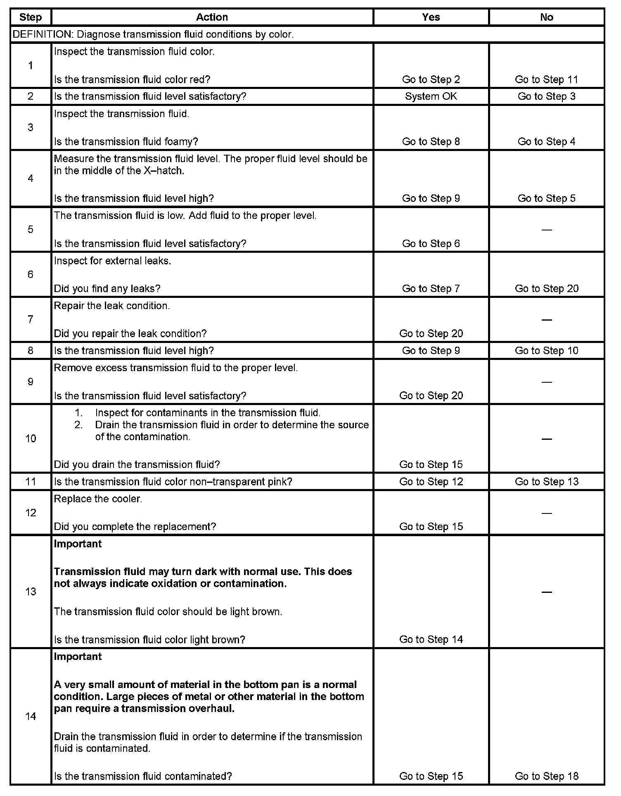
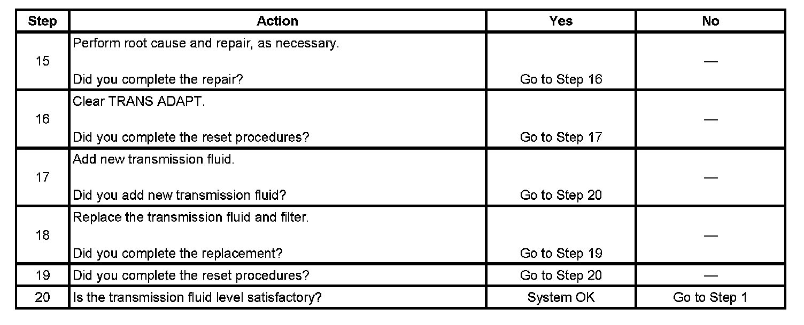

4L80-E/4L85-E Automatic Transmission
Transmission Fluid Checking
1. Start the engine and operate the vehicle for 15 minutes or until the transmission fluid reaches an operating temperature of 82-93° C (180-200° F).
2. Park the vehicle on a level surface.
3. With your foot on the brake, move the shift lever through each gear range. Pause for about 3 seconds in each range, ending in PARK.
4. Apply the parking brake and let the engine idle for 3 minutes.
5. Remove the transmission fluid level indicator. Wipe the fluid level indicator clean. Insert the fluid level indicator. Give the fluid level indicator a full twist in order to close.
6. Wait 3 seconds and remove the fluid level indicator.
7. Read both sides of the fluid level indicator. The fluid must be within the hot cross-hatched area using the lowest level reading.
Step 1 - Step 14:

Step 15 - Step 20:
